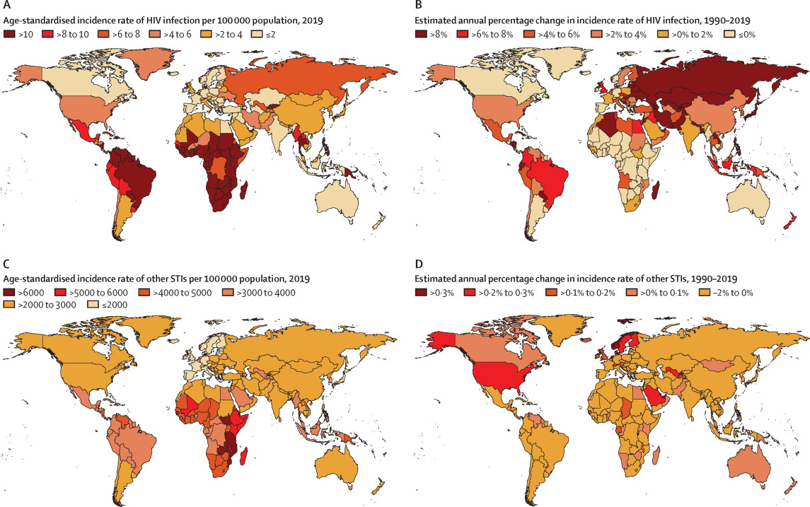
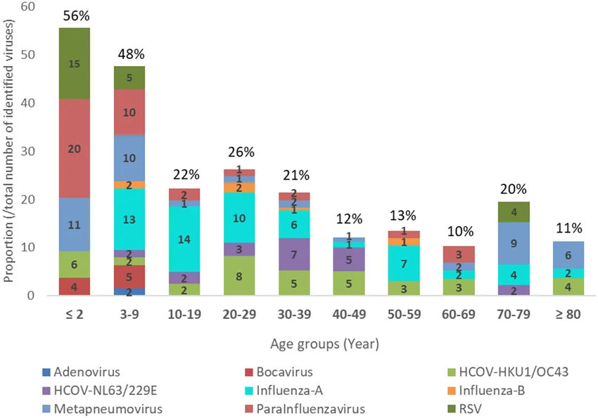
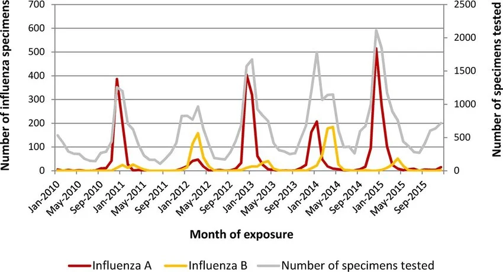

Global Data Dashboard
This page explores real-world virus data across regions, age groups, and time to show how patterns of infection and severity change.
Key Takeaways
- Virus impact varies significantly by region due to population density, healthcare access, and public health responses
- Per-capita data (e.g., cases per million) provides more accurate comparisons than total case counts
- Age groups experience different risks: younger populations often have higher exposure, while older groups face greater severity
- Timeline data reveals waves, seasonal patterns, and the effects of interventions like vaccination
- Data interpretation requires caution due to differences in testing, reporting, and surveillance across regions
Why Global Data Matters
Virus outbreaks do not affect every population in the same way. Infection rates, hospitalization, and death rates can vary by region, age group, vaccination level, public health response, and access to healthcare. Looking at global data helps us compare trends and understand where viruses have the greatest impact. [32]
Virus Prevalence by Region
Some viruses spread more widely in certain parts of the world because of climate, travel patterns, population density, healthcare access, or seasonal effects. Regional data can reveal where transmission is highest and where public health resources may be most needed. [33]
🌍 Comparing Regions
This dashboard section can show infection prevalence across continents or countries using charts, maps, or ranked bar graphs. For example, one graph could compare reported cases per 100,000 people across regions during the same time period.
Interactive chart using simplified comparison data. Values compare broad regions using per-million metrics.

Regional Comparison Table
| Region | Example Trend | Possible Influences | Why It Matters |
|---|---|---|---|
| North America | High seasonal waves in respiratory viruses | Travel, indoor winter spread, urban density | Helps predict healthcare demand |
| Europe | Strong winter transmission patterns | Climate, mobility, aging populations | Useful for comparing policy responses |
| Africa | Surveillance may be uneven across regions | Testing access, reporting capacity | Shows limits of available datasets |
| Asia | Large differences between countries | Population size, density, public health systems | Reveals how context changes spread |
| South America | Periodic regional surges | Seasonality, mobility, healthcare strain | Highlights outbreak timing differences |
Regional comparisons can help explain why virus burden is not evenly distributed around the world.
Age-Group Comparisons
Age is one of the most important factors affecting viral risk. Some age groups are infected more often because of school, work, or social contact, while other groups may face more severe outcomes because of weaker immune responses or underlying conditions. [34]
👶 Infection Rates by Age
Younger age groups may experience high exposure rates because of close contact in schools and households. However, high infection rates do not always mean the highest severity. [34]
🧓 Severity by Age
Older adults are often at greater risk of severe disease, hospitalization, and death, especially for respiratory viruses. This means dashboards should compare not only how many people are infected, but also how serious outcomes differ by age. [35]
Interactive age-group chart. Values are simplified for comparison and should be interpreted as relative patterns, not exact rates.

Age-Group Risk Table
| Age Group | Typical Exposure Risk | Typical Severity Risk | Main Reason |
|---|---|---|---|
| 0–17 | Moderate to high | Usually lower | Frequent close contact, but often milder illness |
| 18–49 | High | Usually moderate | Work, travel, and social mixing increase exposure |
| 50–64 | Moderate | Higher | Risk rises with age and chronic health conditions |
| 65+ | Moderate | Highest | Immune decline and greater vulnerability to complications |
Age-group dashboards are useful because infection frequency and severity are not the same thing.
Timeline Graphs and Changes Over Time
Timeline graphs show how outbreaks rise and fall. These visualizations help scientists and the public identify waves, seasonal patterns, sudden surges, and long-term declines. They can also show how interventions such as vaccination, masking, or public health restrictions influence transmission. [36]
📈 Tracking Waves
A timeline graph can show reported cases, hospitalizations, or deaths across weeks, months, or years. This makes it easier to spot when a virus is spreading rapidly and when transmission slows down. [36]
🕒 Comparing Multiple Variables Over Time
More advanced dashboards can compare several trends at once, such as infection rates, vaccination coverage, and severe outcomes. This helps show that the number of cases alone does not tell the full story. [37]
Interactive timeline chart using simplified comparison data. Use the dropdowns to compare countries and metrics over time.

How to Read a Dashboard Like a Scientist
🔍 Look at the Units
Always check whether the graph shows total cases, cases per 100,000 people, hospitalization rate, or death rate. Raw totals can be misleading when populations are very different sizes.
⚖️ Compare Infection and Severity Separately
A group with many infections may not have the highest severe outcomes. Scientists separate these measures so that public health decisions are based on both spread and impact. [38]
📉 Watch for Missing or Uneven Data
Not all countries or regions collect data in the same way. Differences in testing, reporting, and surveillance can make one area appear safer or riskier than it really is.
Common Misconceptions
Myth: “The region with the most total cases is always the worst affected.”
Not necessarily. Larger populations often report more total cases. Per-capita rates can give a more accurate comparison of how widespread infection really is.
Myth: “If a younger group has more infections, it must also have the most severe disease.”
That is not always true. Exposure and severity measure different things. Some groups may be infected more often while others are more likely to be hospitalized or die from the same virus.
Myth: “A timeline graph only shows the past.”
Timeline graphs do show past data, but they also help researchers identify patterns that can improve forecasting and preparedness. [39]